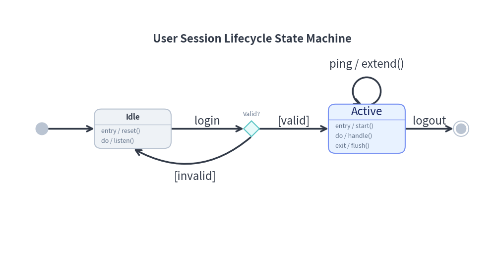
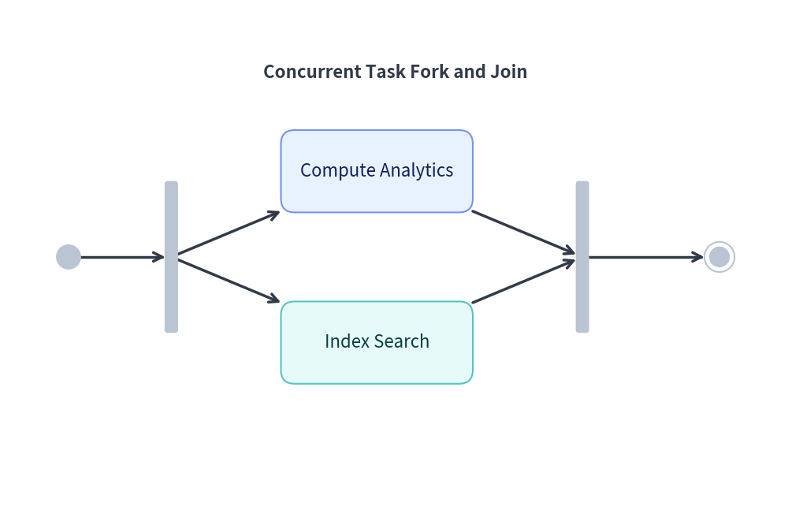

StateDiagram: UML Statecharts, Automata & Transitions
StateDiagram models behavioral state transitions, Finite State Machines (FSM), and UML 2.0 Statecharts. It provides dedicated pseudo-states, internal action compartments (entry, do, exit), and curved arc transitions.
1. Overview & Action Compartments
(Initial)
│
▼
┌─────────┐ event [guard] / action
│ Idle ├─────────────────────────────────►┌──────────────┐
└────▲────┘ │ Processing │
│ failure (bend=0.3) ├──────────────┤
└───────────────────────────────────────┤ entry/timer │
│ do/calculate │
└──────────────┘
- UML Action Compartments: A
Statecard can display internal behavior triggers (entry,do,exit) below a divider line. - Pseudo-States:
InitialState: Solid black circle indicating system start.FinalState: Bullseye concentric circles indicating termination.ChoiceState: Diamond shape for dynamic conditional branching.ForkJoinState: Solid synchronization bar for concurrent state splits and joins.
- Standard Transition Syntax: Transition labels automatically format as
event [guard] / action. - Bidirectional Arcs (
bend): Settingbend=0.3creates smooth curved lines, allowing bidirectional transitions between the same pair of states without overlapping.
2. Constructor & Core Classes
from drawlib.diagrams.state import (
ChoiceState,
FinalState,
ForkJoinState,
InitialState,
State,
StateDiagram,
)
from drawlib.styles import Styles
sd = StateDiagram(
node_style=Styles.Neutral,
edge_style=Styles.DarkBold,
edge_text_style=Styles.Dark,
title="Session Lifecycle State Machine",
)
# State with action compartments
active = sd.add(
State("Active", shape="box", entry="start_heartbeat()", do="handle_requests()", exit="flush()", style=Styles.PrimaryNeutral),
xy=(60.0, 40.0),
)
# Transition with guard and action
init = sd.add(InitialState(), xy=(10.0, 40.0))
sd.connect(init, active, event="login", guard="token_valid", action="init_session()")
Registration, Transitions & Rendering Methods
sd.add(item, xy=(x, y), *, show: bool = True) -> StateNode | StateNote: Places a state, pseudo-state, or note at(x, y)and returns the mutable element (node.show,node.style,node.text_style). Ifshow=False, the state and any transitions connected to it are skipped duringdraw()while diagram bounds stay fixed.sd.connect(src, dst, event="", guard="", action="", ..., bend=0.0, show: bool = True) -> Transition: Registers a state transition and returns a mutableTransitioninstance (tr.show,tr.style,tr.draw_ratio,tr.draw_direction).sd.draw(xy=(0.0, 0.0), *, scale: float = 1.0) -> None: Renders the state diagram atxy, proportionally scaling state positions, dimensions, curved arcs, and font sizes byscale.
3. Session Lifecycle State Machine
The following complete example showcases pseudo-states, choice diamonds, action compartments, a self-loop, and curved return transitions:

4. Concurrent Task Synchronization (Fork & Join)
Use ForkJoinState to represent concurrent parallel threads:

5. Best Practices & Guidelines
- Use
bendfor Opposing Transitions: When two states transition back and forth (e.g.Idle↔Active), applybend=0.25on one transition andbend=-0.25on the return so they do not overlap. - Standard Label Formatting: Prefer passing
event,guard, andactionparameters rather than writinglabel="login [valid] / init". Drawlib guarantees standard UML typography and spacing. - Choice Diamond Clarity: Label exit branches from
ChoiceStatewith explicitguardcriteria (guard="is_valid"vsguard="is_invalid").